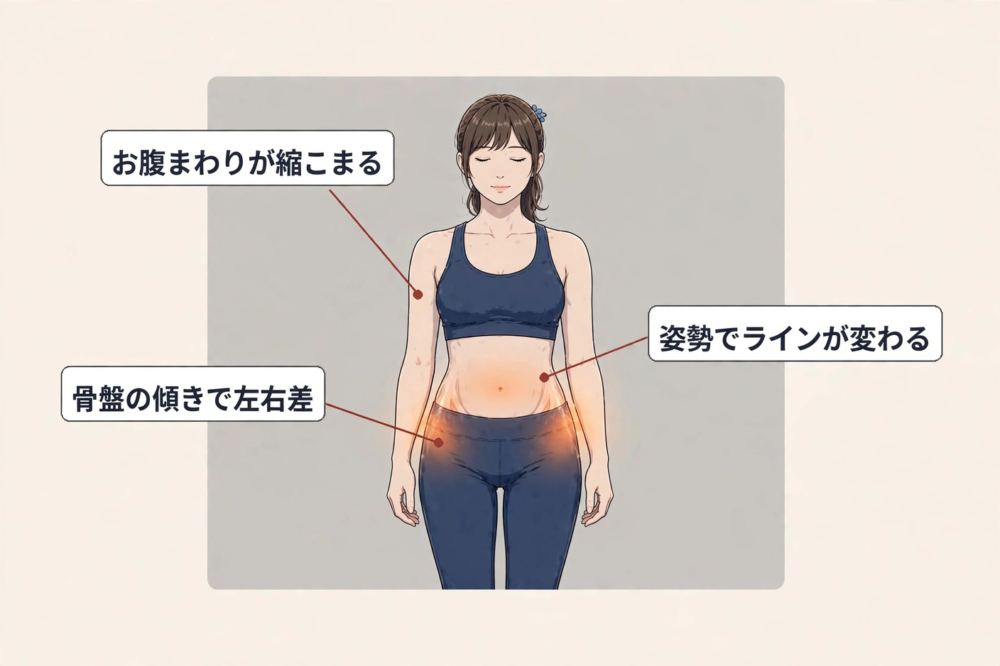

くびれ作り
美容整体ステラ・ポラリス東三国｜大阪市淀川区東三国・東三国駅徒歩5分・女性向け

肋骨の開きを締め、内臓の位置を上げる美容整体
くびれの見え方は、体重だけでなく、肋骨の開き具合や姿勢、呼吸の仕方によっても変わります。呼吸が浅く肋骨が開いたままの状態では、ウエストまわりが寸胴に見えやすくなると言われています。また、骨盤の傾きや背中の丸まりも、くびれのラインに影響します。体重は変わらないのにシルエットが気になる、という方から相談の多いテーマです。このページでは、くびれが見えにくくなる仕組みと、ウエストのラインが感じられる姿勢を目指す当サロンでのケア、ご自宅でできるセルフケアをご案内します。まずは下のチェックで、ご自身の状態を確かめてみてください。
ご予約はこちら（Coubic）こんなお悩みありませんか
- 体重は変わらないのに、ウエストのくびれが感じられない
- 肋骨の下の部分が、外に開いている気がする
- 呼吸が浅く、胸だけで呼吸している感じがする
- ドレスや水着など、体のラインが出る服に自信がない
- 猫背や反り腰など、姿勢の崩れを自覚している
- お腹まわりが張って、スカートのウエストがきつく感じる
- 写真に写った横からのシルエットが気になる
当てはまる項目が多いほど、肋骨の開きや姿勢の崩れが、くびれの見え方に影響している目安とされています。くびれは体重だけの問題ではなく、姿勢と呼吸という土台が関係しているのがポイントです。次のセルフチェックで、今の肋骨の状態の傾向を確かめてみましょう。
簡単セルフチェック（肋骨の開きチェック）
手の感覚でできる、肋骨の開きの傾向を知るための簡単な方法です。
- 両手を肋骨の下のふくらみに当て、ゆっくり深呼吸をします。
- 息を吸うときに手が外へ広がる動きと、吐くときに内側へ閉じる動きを確認します。
- 吐いても肋骨が開いたままに感じる、左右で動きが違う場合は、肋骨まわりが固まっている目安と言われています。
※これは診断ではありません。ご自身の状態の傾向を知る目安としてお使いください。
くびれ作りの原因と仕組み
肋骨の開きと呼吸の関係
肋骨は、呼吸に合わせて広がったり閉じたりする骨格です。ところが、浅い呼吸が続くと、肋骨は開いたままの位置で固まりやすくなると言われています。肋骨の下部が外に開いた状態では、ウエストの最も細い部分が埋もれて見え、くびれのない寸胴なシルエットに見えがちです。反対に、深い呼吸で肋骨が閉じる動きを取り戻すと、ウエストのラインは感じやすくなります。図1のように、くびれの見え方は肋骨・呼吸・姿勢の組み合わせで決まっていきます。

図1 くびれが見えにくい姿勢で起こりやすい変化と、ウエストのラインが感じられる姿勢のイメージ。姿勢の状態には個人差があります。
姿勢の崩れとの関係
猫背では背中が丸まってお腹が潰れたように見え、反り腰では下腹が前に出て見えます。どちらの姿勢でも、ウエストのラインは埋もれやすくなります。くびれはお腹まわりだけの問題ではなく、背骨と骨盤を含めた姿勢全体のバランスの上に成り立つものです。姿勢が整うと、それだけでシルエットの印象が変わることがあります。
お腹まわりの筋肉と支える力
お腹まわりには、体幹を支える筋肉が層になってついています。これらの筋肉が使いにくい状態では、肋骨や骨盤の位置を保ちにくくなり、姿勢の崩れとあわせてくびれが見えにくくなります。反対に、お腹に自然と力が入る姿勢が身につくと、ウエストまわりはすっきりと支えられやすくなります。鍛えることだけでなく、まず「使える状態」に整えることが大切です。
シルエットの印象と予定に向けたケア
くびれは、ドレスや水着、体のラインが出る服の印象を大きく左右するポイントです。イベントや旅行の予定に向けてシルエットを整えたいというご相談は、その時期に集中します。体重を落とすことだけに頼らず、姿勢と呼吸の土台から整えるケアは、短期間の無理な調整に頼らない方法として選ばれています。
セルフケアで足りる場合・サロンケアが向く場合
肋骨の動きが感じられ、深呼吸や姿勢の意識でウエストの感覚が変わる日が多い場合は、まずご自宅でのセルフケアを続けて様子を見る方法があります。一方で、肋骨まわりが自分では動きを感じにくい、深い呼吸の仕方がつかみにくい、ドレスや水着の予定に向けてシルエットを整えたいという場合は、サロンでのケアが向いている目安になります。サロンでは、呼吸に合わせて肋骨まわりを整えることで、施術後に「ウエストの感覚が変わった」「姿勢が伸びた」と感じやすい状態を目指します。どちらが正解というものではなく、今の状態に合わせて選ぶことが大切です。
当サロンでのケア
当サロンのくびれケアは、「肋骨の開きを締め、深い呼吸ができる姿勢」を目指す組み立てです。呼吸のご案内も交えながら、部位と目的に合わせて3つの手技を組み合わせます。
美容整体：呼吸に合わせて肋骨まわりを整える手技を中心に、骨盤の傾きや背骨のラインも確認しながら、ウエストのラインが感じられる姿勢の土台をつくることを目的に進めます。
アロマオイルマッサージ：お腹や腰まわりをオイルで丁寧にゆるめ、巡りが流れやすい状態を目指します。香りに包まれるリラックス感の高いケアです。
もみほぐし：背中や腰の張りやすい筋肉をほぐし、姿勢を保ちにくさの背景になりやすい緊張をゆるめることを目的に進めます。
ケアを通して目指すのは、こんな変化です。
- ウエストのくびれが感じられるシルエットへ
- 深い呼吸がしやすくなり、姿勢が整いやすい状態へ
- お腹まわりがすっきり見える印象へ
- 肋骨の開きが締まって、ドレスや水着のラインが楽しみになる仕上がりへ
- 立ち姿のラインがきれいに見え、後ろ姿の印象も軽やかへ
深い呼吸ができるようになると姿勢も整いやすくなるため、施術では呼吸のご案内も大切にしています。施術後はウエストまわりの感覚の変化を一緒に確認し、くびれを意識した立ち姿勢のポイントもお伝えします。ドレスや水着の予定に向けたケアにもご相談ください。

施術の流れ
ご来店後、気になる部位やお悩み、ご希望の強さなどをうかがいます。完全個室のため、周りを気にせずお話しいただけます。
肋骨の動きや呼吸の深さ、骨盤の傾きなどを一緒に確認し、その日の状態に合わせた施術の進め方をご案内します。
美容整体を中心に、ご希望に応じてアロマオイルマッサージ、もみほぐしを組み合わせて進めます。強さは途中でも調整できます。
施術後の状態を確認し、ご自宅で続けやすいセルフケアのポイントをお伝えします。次回の目安についても、ご希望があればご案内します。
料金
| コース | 通常価格 | キャンペーン価格（12/25まで） |
|---|---|---|
| 80分 | ― | 3,000円 |
| 100分 | 10,000円 | 4,000円 |
| 120分 | ― | 5,000円 |
クリスマスキャンペーンは12月25日まで、ご新規様もリピーターの方も対象です。施術内容は当日の状態とご希望に合わせて組み立てます。
ご自宅でできるセルフケア
- 肋骨を締める深呼吸：両手を肋骨の下に当て、息を吐くときに肋骨が内側へ閉じる動きを意識します。5回を1セットとして、朝晩に行うのが目安です。
- ドローイン：お腹をへこませるように息を吐き、10秒キープします。5回を1セットとして1日2セット、座ったままでも取り入れられます。
- 脇腹のストレッチ：片手を頭の上へ伸ばし、反対側へ体を倒して脇腹を伸ばします。左右それぞれ20〜30秒、1日1〜2回が目安です。
- 姿勢のリセット習慣：長時間座ったあとは一度立ち上がり、両手を組んで天井へ伸ばすストレッチをします。固まる前にほぐす習慣が大切です。
ご自宅でのケアに：セルフケア資料ライブラリ（無料）
このお悩みに合わせたセルフケアの考え方を、無料の資料ライブラリでご紹介しています。
セルフケア資料ライブラリを開く →
受診の目安
お腹の張りや痛みが続く、急な体重の変化がある場合は、施術の前に医療機関への相談をおすすめします。また、食欲の急な変化や強い疲労感を伴う場合も、医療機関でご相談ください。
よくある質問
Q. 初めてでも大丈夫ですか？
はい。当サロンは完全予約制・完全個室で、1日3組までのご案内です。最初にカウンセリングで気になる部位やご予定をうかがい、無理のない内容から始めます。施術の前後でウエストまわりの感覚を確認しながら「姿勢が伸びた」「呼吸が深くなった」といった感覚の違いを一緒に確かめますので、初めての方も安心してご利用いただけます。
Q. 施術は痛いですか？
強さは、ご希望をうかがいながら調整します。お腹まわりはデリケートなため、やさしい圧を基本に、呼吸に合わせて丁寧に進めます。感じ方には個人差がありますので、施術中も遠慮なくお声がけください。
Q. コースはどう選べばいいですか？
80分・100分・120分のコースがあり、ケアしたい部位の広さやお時間のご都合に合わせて選べます。くびれのケアで肋骨まわりからお腹、腰、背中までゆっくり整えたい方には、100分が選ばれることが多いコースです。迷われる場合は、ご予約の際にお気軽にご相談ください。
Q. 場所と予約方法を教えてください。
大阪市淀川区東三国、東三国駅から徒歩5分です。完全予約制のため、予約サイト（Coubic）またはLINE公式アカウントからご予約をお願いしています。
Q. 男性も受けられますか？
当サロンは女性向けのため、男性の方は、同じ東三国の男性専用整体院「北辰堂」をご案内しています。
施術者について
平賀建人（施術歴30年）
鍼灸師・登録販売者・アロマセラピスト・パーソナルトレーナーの資格を持ち、美容整体を中心に、アロマオイルマッサージ、もみほぐしを、その日の状態とご希望に合わせて組み合わせて施術します。このページの内容は、施術者の知識と経験をもとに作成しています。

料金・ご予約
ご新規様もリピーターの方も 12/25まで
80分 3,000円／100分 4,000円／120分 5,000円
通常価格は100分10,000円です。施術内容はご希望に合わせて組み立てます。
営業時間：月〜土 17:00〜23:00／日 10:00〜23:00（完全予約制）｜電話：080-2468-3086
大阪府大阪市淀川区東三国2丁目25番4号101（東三国駅徒歩5分）